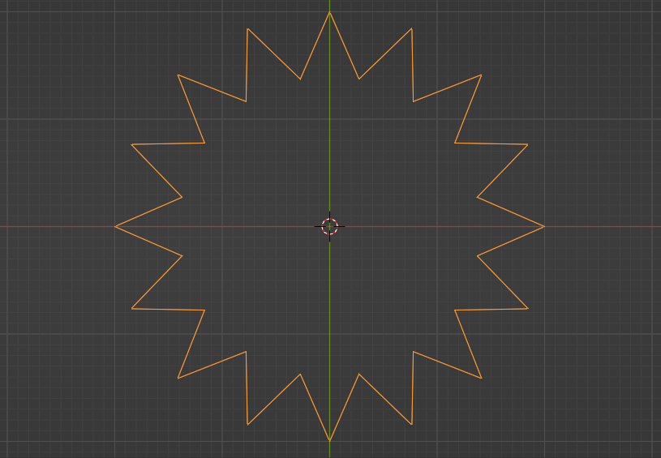
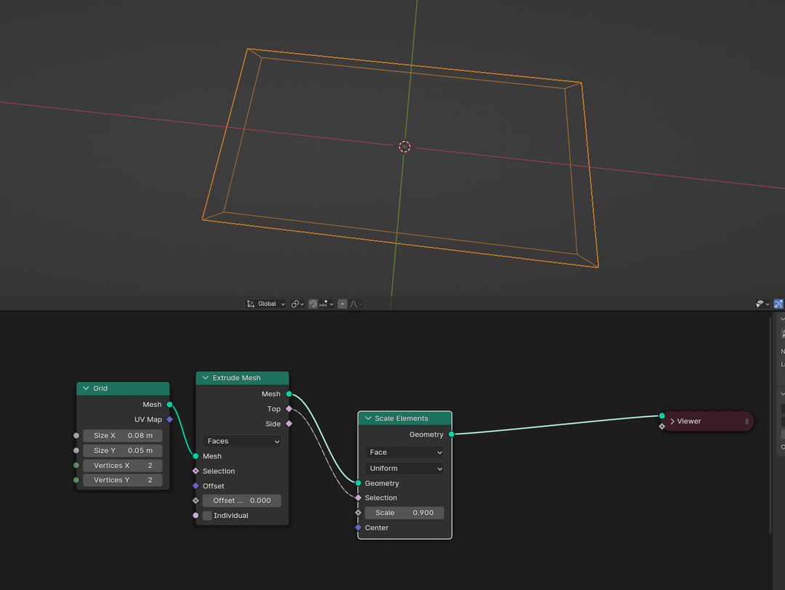
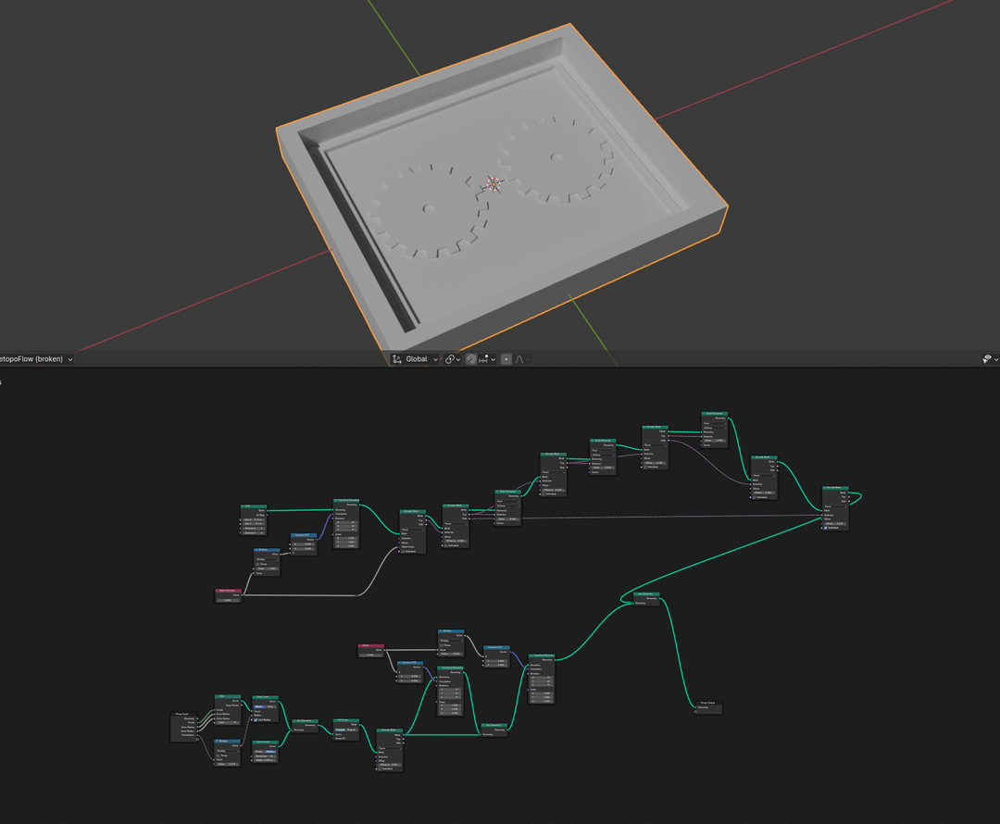
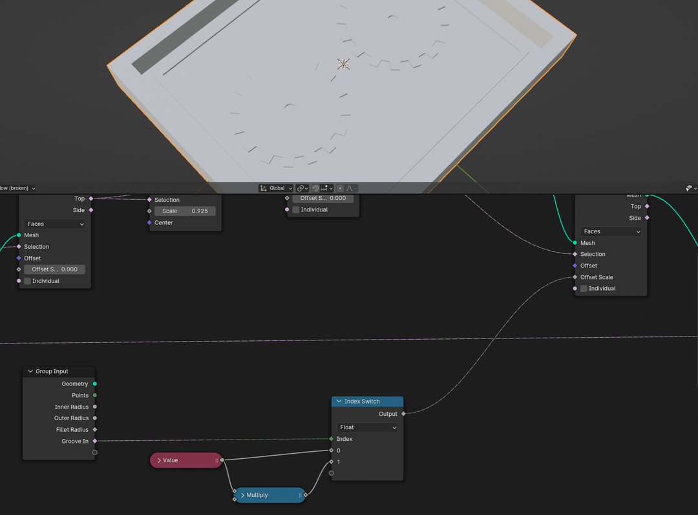
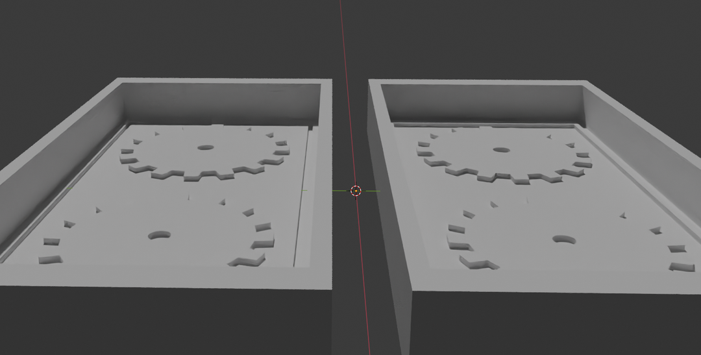

Table of Contents
Assignment
* Review the safety data sheets for at least two of labs molding and casting materials.
* Make and compare test casts with each of them.
* Design a 3D mold around the stock and tooling that you'll be using.
* 3D print it using FDM printers
* Use it to cast parts.
* Include a hero shot and source files of your design in your documentation.
* Submit a link to your assignment page here.Group
This week it was my turn to handle the group assignment page. Here it is.
Concept & Modeling
I went through many options for what to do for this assignment. It was too early still to try to make a casing or anything practical for my final project. Decided to make a gear for the as of yet hypothetical card scanner project which I made the board for during output devices week.
I did not know what the idiomatic or proper way was to attach things to the motor axle. Since this was just a practice project for molding and casting, and I wasn’t actually making the scanner machine yet, I didn’t worry too much about it.
This time I went with Blender instead of Ondsel for the modeling. Getting a simple procedural gear setup was much simpler here than it would’ve been in Ondsel/FreeCAD.
The process begins with a Star node, which creates a star shaped curve.
The Fillet Curve node then trims the sharp edges of the star and creates the gear shape.
A small Curve Circle node creates the hole for the motor axle. Joining the fillet and circle outputs with a Join Geometry and feeding that to a Fill Curve then turns the curves into a mesh and correctly assumes that the inner circle should be empty.
That is the entire node setup for the gear (without thickness). It could be even simpler, without the multiply, but I added that to make setting the fillet value easier because its value is too small to be visible on the node itself.
Now for the mold mold. The casing into which the rubber mold will be cast.
Start from a Grid from which you Extrude Mesh, but with no offset. The Extrude Mesh node has handy outputs with which you can select the top or side faces of the new mesh. This can be used to selectively scale only the top face of the extrusion with Scale Elements, which effectively allows us to inset the face. Blender doesn’t have an inset node, so this was a simple workaround for that.
We can also utilise the side selection socket to extrude the walls of the box.
Chaining these extrusions and scale elements also makes creating the inner groove simple.
A boolean group input can be used with an Index Switch to easily toggle between two values. I needed this to be able to invert the groove in the mold for the other half. I then collapsed the entire node network into a Node Group so I could reuse it.
The entire node network you saw before, along with the index switch stuff had been collapsed into a NodeGroup and copied once, just with the groove inversion set. It’s small in the image, but you can see how in the two copies, one groove is inverted and the other is not.
I went back to make the boxes narrower by tweaking a couple parameters. No point in wasting all that material.
The source .blend and .stl files are available, at the time of writing, through this link.